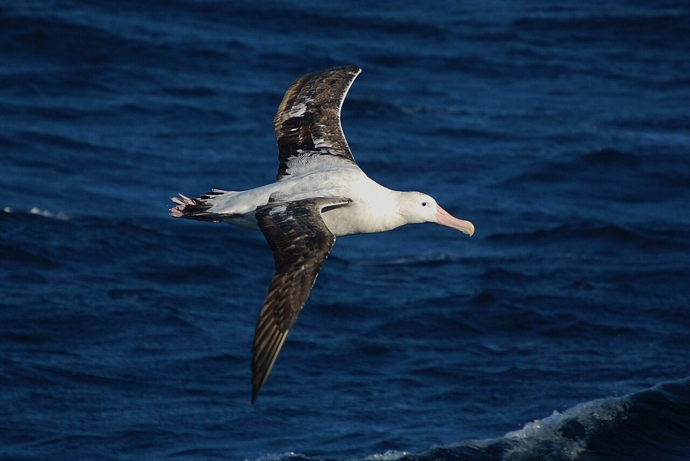
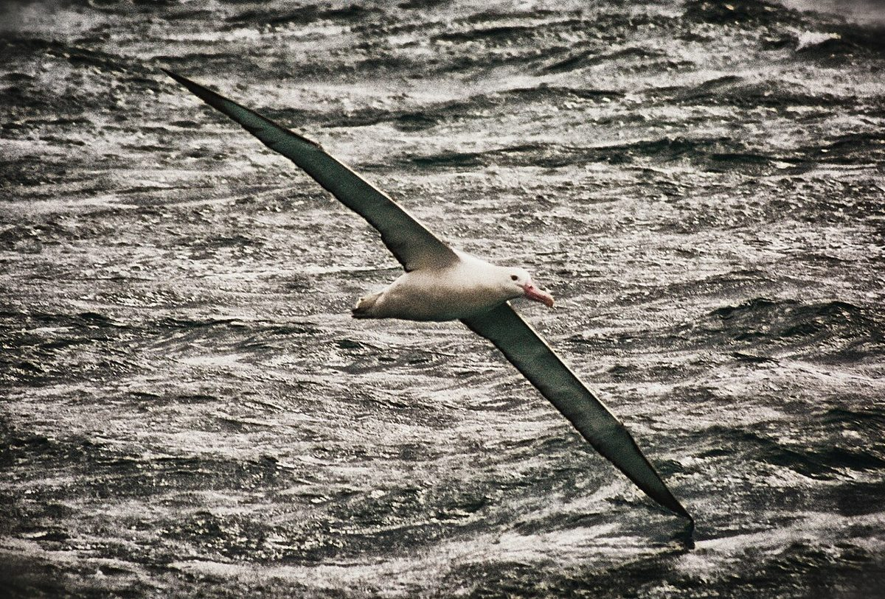
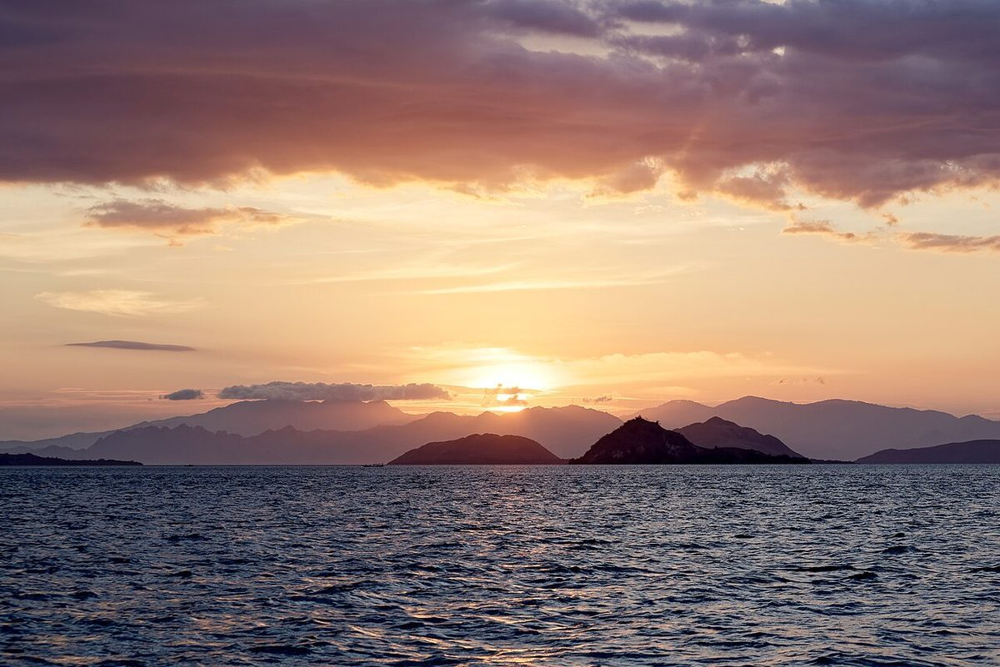

制作側の連想
屋号から思い浮かべた、波の上の滑空
屋号の由来は分かりません。制作側は「Albatross」という言葉から、大きな翼で海の上を渡っていく鳥の姿を連想しました。そこでこのページは、飛びはじめから着水までを「離水・上昇・滑空・旋回・着水」の5つの段に分け、波の線に沿って読み進める作りにしています。お店の理念・由来とは無関係の、制作側の連想です。
離水から着水まで(イメージ)
ひと飛びぶんの、海の景色。
写真は土岐市やお店の風景ではありません。段ごとのイメージで選んだ、国外・撮影地不明のフリー素材です。
- 01離水

国外のイメージ(米国) - 02上昇

国外のイメージ(タークス・カイコス諸島) - 03滑空

撮影地不明のイメージ - 04旋回

国外のイメージ(米国) - 05着水

国外のイメージ(インドネシア)
ご案内
お店のこと(確認できたものだけ)
| 所在地 | 岐阜県土岐市泉町久尻2-1 コハクビル1階 |
|---|---|
| 電話 | なし |
| 営業時間 | 準備中 |
| 定休日 | 準備中 |
| ご予約 | 準備中 |
| 駐車場 | 準備中 |
| SNS | Instagram @cafe.alba2025 |